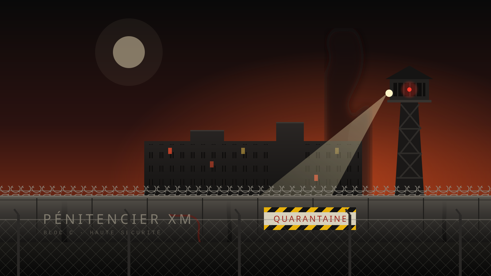

CONFINEMENT TOTAL / BLOC C
AVIS N°07 / ZONE DE QUARANTAINE
JOUR 41 APRÈS L’ÉPIDÉMIE
Les portes
se sont ouvertes.
Le pénitencier militaire XM est tombé. Les détenus infectés errent dans les couloirs et le bunker de commandement ne répond plus. Trouvez une issue avant le verrouillage définitif.
ESCAPE ROOM POINT & CLICK
Fouillez. Crochetez. Survivez.


01 / ÉVASION02 / ÉNIGMES03 / SURVIEDOSSIER EN DÉVELOPPEMENT